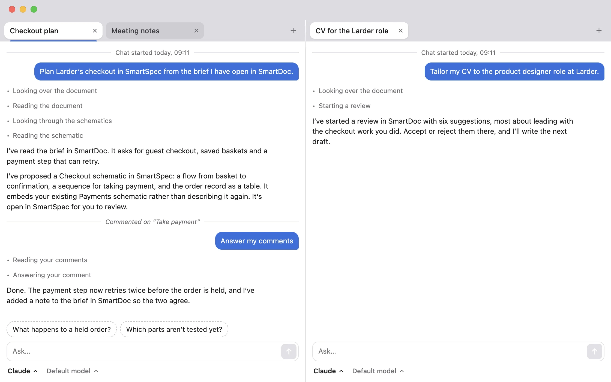

One conversation, both apps
Read a brief in SmartDoc and plan the system it describes in SmartSpec, in the same chat. Your AI knows what each app has open.
BetaWorks with Claude and ChatGPT
SmartDesktop is the chat for SmartDoc and SmartSpec. It runs your own Claude or ChatGPT, signed in with your own account, and gives it both apps’ tools, so one conversation can work in either.
SmartDesktop is in beta, so it may change significantly from one version to the next.

What it does
Ask in the chat, and your AI works in SmartDoc and SmartSpec while you watch. You decide what it proposes, in the apps.
Read a brief in SmartDoc and plan the system it describes in SmartSpec, in the same chat. Your AI knows what each app has open.
Start as many chats as you like, in tabs. Drag one beside another to work on both. Your AI names each after what it’s about.
A chat’s AI works in tabs of its own in the apps, so two chats never get in each other’s way. A tab’s chat button brings its chat back.
Claude (Claude Code) or ChatGPT (Codex), set up for you with each maker’s own installer. SmartDesktop never sees your sign-in.
Install
Three steps, and nothing to type in Terminal.
Open the download and drag SmartDesktop into your Applications folder. It lives in the menu bar, with no Dock icon.
The first time SmartDesktop opens, choose Claude or ChatGPT. It installs your AI with its maker’s own installer and opens their sign-in page.
In SmartDoc or SmartSpec, choose Window › Show the Chat (⇧⌘C), or Open Chat on a tab. They start SmartDesktop if it isn’t running.
No account, no trial, no paid plan: SmartDesktop is released under the MIT licence. In beta, and still changing significantly.